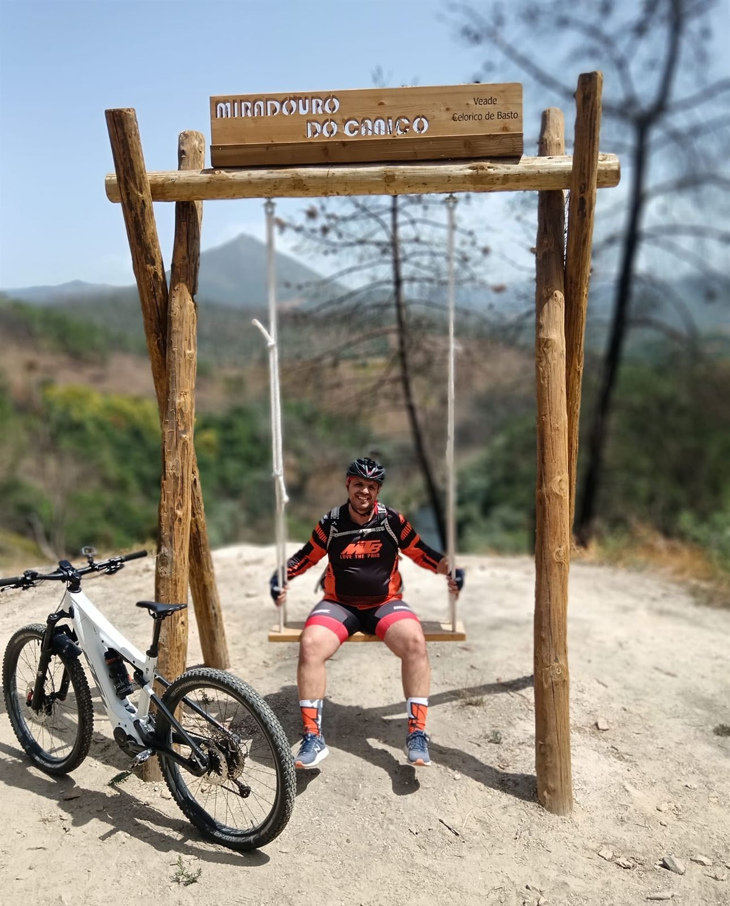
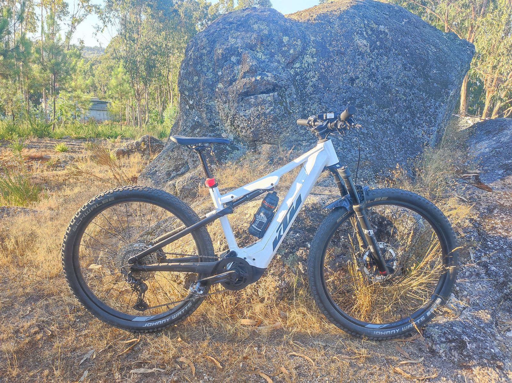

O BTT é o meu hobby preferido. Faço parte da equipa 💯 Kedas e gosto de explorar percursos na minha zona, entre Penafiel e o Vale do Sousa, e de vez em quando partir para aventuras mais longas.

A minha equipa de BTT. É com eles que faço muitas das voltas pelos trilhos da região e as aventuras maiores, como a peregrinação de bicicleta do Porto a Fátima.
Seguir no FacebookA KTM Macina Chacana 791 26" é muito mais do que uma bicicleta: é uma declaração de princípios sobre mobilidade responsável. Com o motor Bosch Performance CX, suspensão FOX e bateria de 750 Wh, exploro os trilhos do Vale do Sousa com alcance e conforto impossíveis numa bicicleta convencional.
Cada trilho percorrido em vez de uma viagem de carro representa menos CO₂, menos ruído e mais preservação dos espaços naturais de Penafiel.

Somos amigos de infância. Desde 2015 que fazemos viagens e passeios pelo país em busca da melhor gastronomia de Portugal.
Fui treinador de futebol de formação no CCRDSV Irivo, nos escalões de Sub-7 e Sub-8: a idade em que se aprende a gostar do jogo, a jogar em equipa e a divertir-se com a bola.
Quero voltar ao futebol de formação e, no próximo ano, tirar o Grau I, o curso de treinador organizado pela Federação Portuguesa de Futebol com as associações distritais.
Um grupo de amigos que se juntou para jogar online durante a pandemia e nunca mais parou.
GTA V e, agora, GTA VI.
Warzone.
O clássico das noites de jogo.
Logótipos: Wikimedia Commons (domínio público). Marcas registadas dos respetivos proprietários.